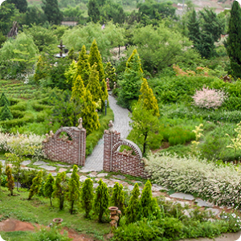

パームカミレは五感で感じる感性を芸術に昇華させる、ロマンチックな緑のある空間です。 パームカミレは2004年5月にハーブ農園で始まり、
今は延べ10万人が訪問するウェルネステーマパークとして生まれ変わりました。 パームカミレでは園芸、ハーブ工房、アロマテラピー体験をはじめ、ヒーリングカフェや製パン所、
農園内部の星の王子さまペンションから5分の距離にある干潟体験などが楽しめます。
ホームページ :
http://kamille.co.kr/page/index.html
住所 : 忠清南道泰安郡南面ウウンギル56-19
電話番号 : 041-675-3636
鬱蒼とした原始林の美しい四季が楽しめるフォレストリソームは、自然を損なわない方法で開発された「エコリゾート」です。
フォレストリソームは自然地形と植生をそのまま保存し、環境にやさしい資材を使用して自然と人間が共に休息を享受できるように設計され、団地内では電線や自動車を見ることができず、
四季折々の美しい野生花やリス、キタリスに出会うことができます。 また、フォレストリソームでは施設内にあるウェルネススタジオの無有空間で展示を観覧したり、
居心地の良いイーグルドームでセルフ星座や夜間撮影に挑戦することもできます。
ホームページ :
https://www.resom.co.kr/forest/main/main.asp
住所 : 忠清北道堤川市白雲面金鳳路365
電話番号 : 1600-0060
堤川韓方エキスポ公園内にある韓方生命科学館は無料で観覧でき、
韓国初の堤川で栽培される環境にやさしいビール原料ホップを活用したヒーリングホップセラピーとウェルネスホップピクニックプログラムを体験できます。
ホップセラピー/ピクニックはホップビューティー、スパに関心のある若い女性層または恋人層を対象にしたプログラムで、ウェルネス入門者が簡単に体験できるウェルネスプログラムです。
ホームページ :
https://www.expopark.kr/bbs/board.php?bo_table=w2_2
住所 : 忠清北道堤川市旺岩洞660
電話番号 : 043-647-2691~2695